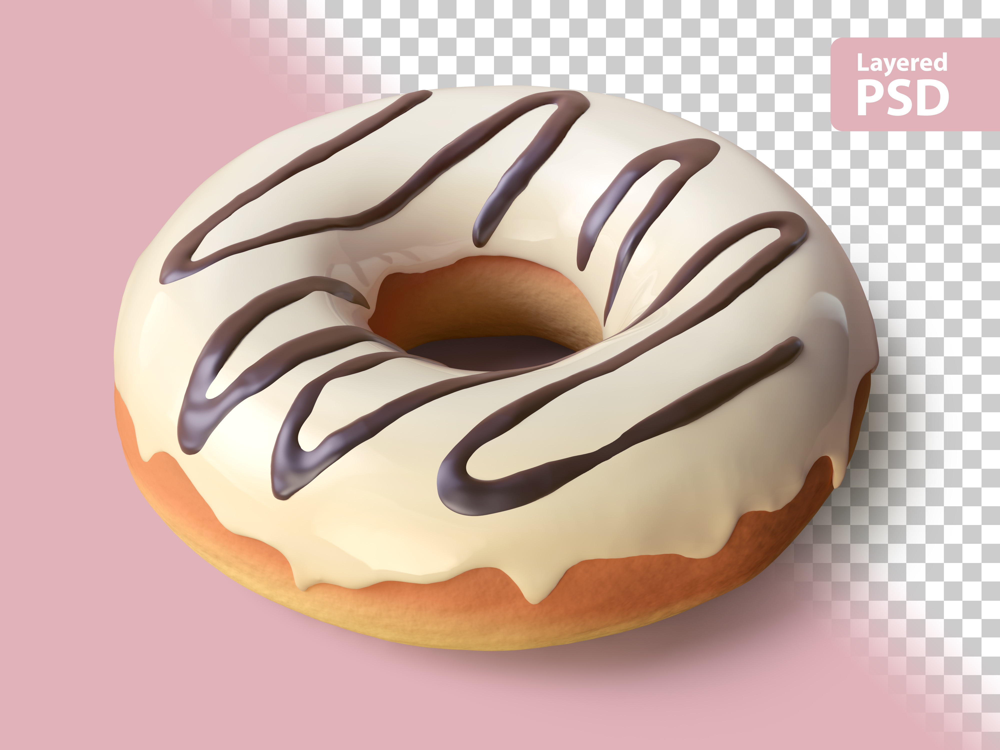

Doughnut
Home

Description
This fluffy doughnut recipe was passed down from my grandma — soft, golden, and made with love in every bite.
Ingredients
- 2½ cups flour
- 2¼ tsp yeast
- ¼ cup sugar
- ½ cup warm milk
- 2 tbsp butter (soft)
- 1 egg
- ¼ tsp salt
- Oil (for frying)
steps
- Mix warm milk, sugar, and yeast. Let sit 5 mins.
- Add egg, butter, salt, and flour. Knead until smooth (10 mins).
- Cover, let rise 1 hour (doubles in size).
- Roll out, cut shapes. Let rise again 30 mins.
- Fry in hot oil till golden. Drain and sugar-coat.
After these steps, your fluffy Doughnut should be ready.
Check out our other Amazing recipes